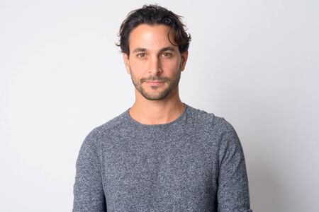

Il nostro Team Chi sta dietro tutto questo
Il gruppo di psicologi che conoscerete qui è un team altamente specializzato in diversi ambiti della psicologia e della psicoterapia. Clicca l'immagine per saperne di più.
Laura Caldarola, psicologa e psicoterapeuta. Laureata nel 2011 presso l’Università “La Sapienza” di Roma ed esperta in psicodiagnosi. Specializzata nella tecnica della Cromoterapia e dell’Aromaterapia. Specialistica in Psicologia del Comportamento Alimentare, in particolar modo nei soggetti in età evolutiva e adolescenziale e nei soggetti affetti da patologie croniche conseguita nel 2014 presso l’università “Niccolò Cusano”, Roma. Master in Analisi del comportamento infantile conseguito nel 2016 presso l’Università di Torino.
Luca Mauri, psicoterapeuta laureato nel 2015 presso l’“Università Bocconi” di Milano. Specializzato in psico-diagnosi, in particolar modo esperto nella tecnica dell’arteterapia: una disciplina largamente utilizzata nella ricerca del benessere psicofisico attraverso l’espressione artistica dei pensieri, dei vissuti e delle emozioni. Diploma in Arteterapia presso la scuola di specializzazione “Artea” di Milano e master in educazione affettiva e sessuale conseguito presso l’Università degli Studi di Firenze”. Attualmente conduce ateliers nell’ambito dell’Intercultura, lifelong learning e di arte e yoga presso centri d’arte contemporanea.
Adriana Miccichè, psicologa laureata nel 2007 presso Alma Mater Studiourm-università di Bologna, dove ha conseguito la specializzazione in psicologia clinica nel 2011. Master in sessuologia clinica presso l’Istituto per lo Studio delle Psicoterapie di Roma, conseguito nel 2013. Lavoro di prevenzione e promozione del benessere psicologico e di consulenza per le dinamiche di coppia e individuali legate al sesso. Ha maturato interesse per la gemmoterapia, branca della fitoterapia e quindi pratica terapeutica alternativa basata sull’utilizzo di estratti ricavati a partire dai tessuti embrionali delle piante e utile ai fini di una sensazione di maggiore benessere.

Andrea Esposito, laureato in medicina nel 2013 presso l’Università “Cattolica” di Milano e specializzato in psichiatria nel 2016 presso l’università pubblica di Milano. Master in Valutazione e Trattamento dei Disturbi Cognitivi e Neuropsicologici nell’ Adulto e nell’Anziano conseguito nel 2018.